01-壳体与外观件
10 篇


02-连接与紧固
32 篇
3D 打印件热熔铜螺母：孔径与拉拔力实测

Arca-Swiss 38 mm 燕尾快装板：事实标准与跨品牌混用风险
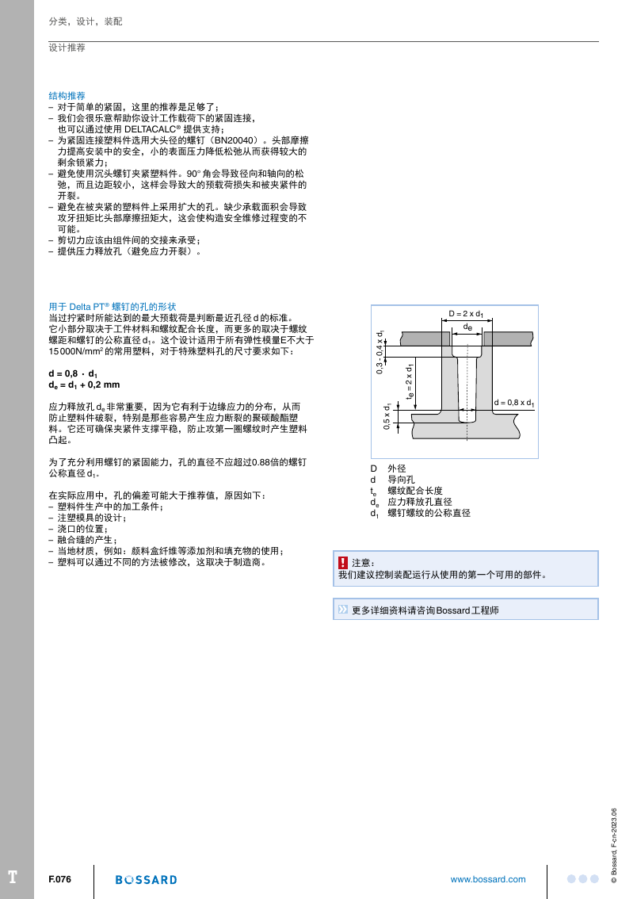
EJOT Delta PT 塑料用三角齿自攻螺丝：底孔 0.8·d1、20° 牙侧角与应力释放沉孔
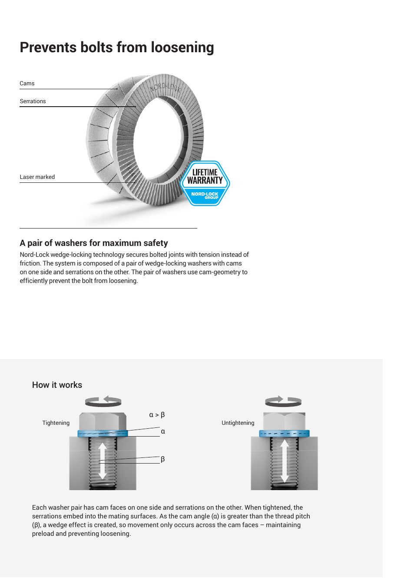
Nord-Lock 楔形防松垫圈：楔角大于螺纹升角的成对拉伸锁紧

Pogo Pin 弹簧顶针：针头、弹簧与针管的工作行程和弹力

Sony E 卡口：三爪、18 mm 法兰距与锁销磨损
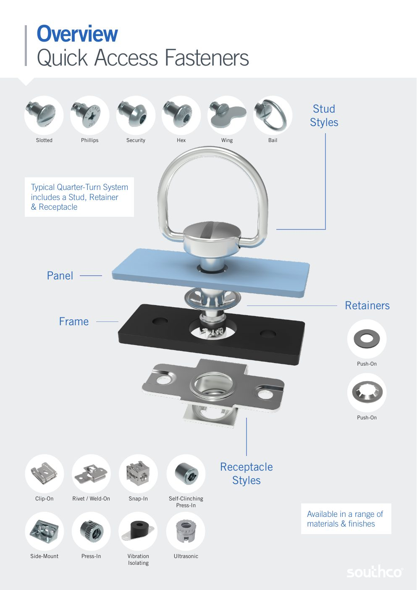
Southco、DZUS 四分之一转快锁：90° 凸轮与按总材料厚度选钉长

Spiralock 楔形底 30° 防松内螺纹：牙顶楔入斜面消除径向间隙

TAPTITE II 金属三角挤牙自攻螺丝：按啮合率选底孔

任天堂 Switch 2 Joy-Con 2 磁吸连接

任天堂 Switch Joy-Con 滑轨连接

储能焊螺柱（GB/T 902.3 PT/IT）：电容放电把焊接端熔到板面

全金属锁紧螺母（DIN 980）：三点变形与金属嵌片的预紧力矩防松

卡扣三种基本形式：悬臂、环形、扭转
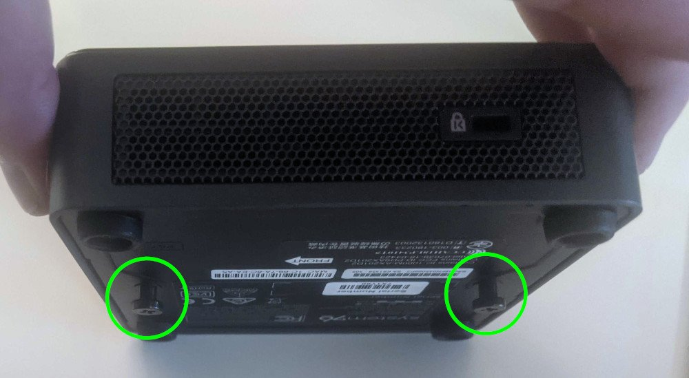
台阶螺丝（ISO 7379 塞打螺丝）：光杆定位、螺纹只锁紧
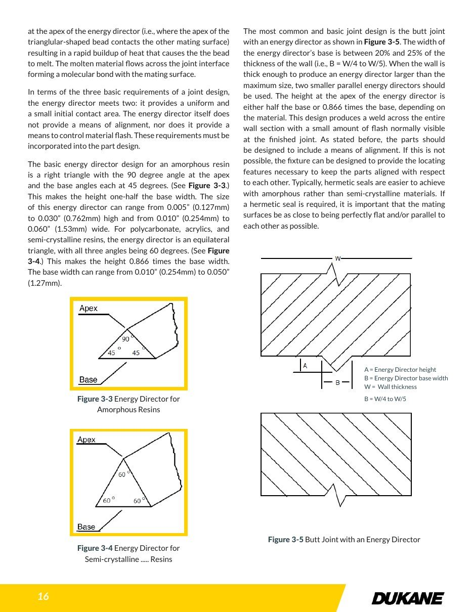
塑料件超声波焊接：导熔线、焊筋与溢胶槽

尼龙嵌件锁紧螺母（DIN 985 Nyloc）：预紧力矩、120°C 上限与安装方向

开口弹簧垫圈防松失效（反面案例）：压平后在横向振动中几乎无效

微软 Surface Laptop 超声波点焊与 Alcantara 覆面（反面案例）

抽芯铆钉（盲铆钉）：钉套、钉芯与断颈槽，开口型与封闭型

拉铆螺母（铆螺母）：单面镦头、铆接范围与圆孔滚花及六角防转
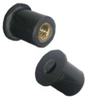
橡胶膨胀螺母（Well nut）：橡胶套筒胀紧孔壁兼隔振

注塑模内预埋铜螺母：模具定位、溢胶风险与直纹及斜花滚花

热铆（热熔柱）：铆柱高度按体积守恒算，蘑菇头直径 2d
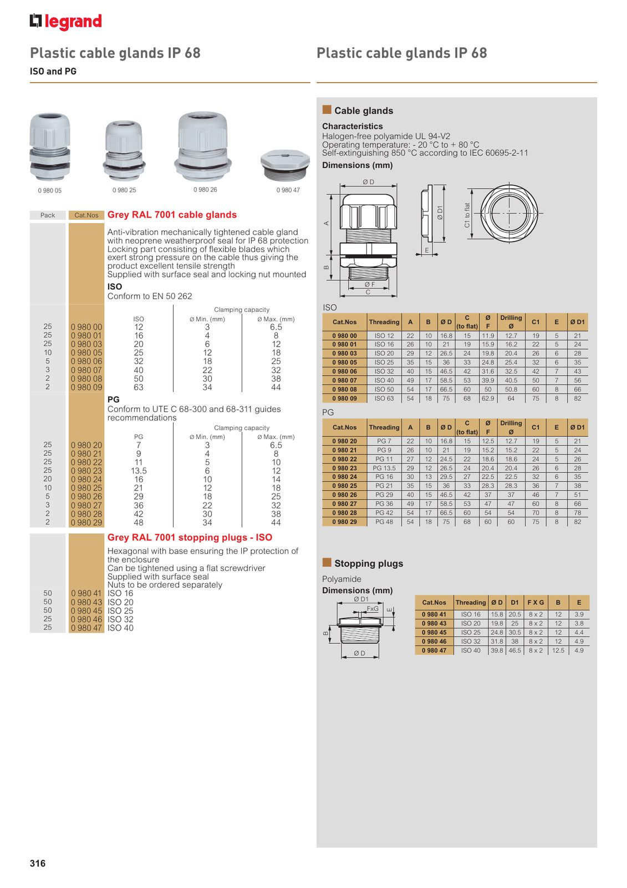
电缆防水格兰头：PG 螺纹、夹紧爪与密封圈
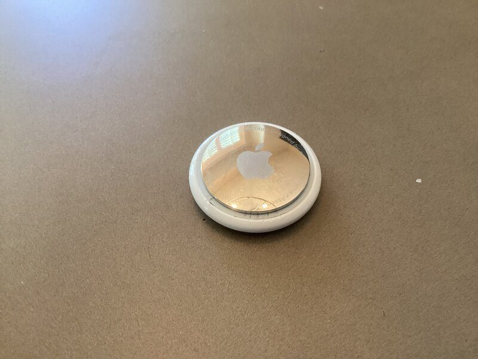
苹果 AirTag 旋转后盖与内部卡扣

钢丝螺套（Helicoil 与 STI 底孔）：菱形钢丝嵌件与专用底孔攻丝

钣金 U 型夹板螺母与卡式笼式螺母：板边夹持与方孔浮动螺纹

钣金压铆螺母（PEM S/CLS）：孔径、最小板厚、边距与板材硬度上限

钣金压铆螺钉（PEM FH 平头螺柱）：孔径、最小板厚、边距与板材硬度上限

钣金压铆隔离柱（PEM SO）：孔径、最小板厚、柱长与板材硬度上限

预涂微胶囊螺纹胶与现场涂厌氧锁固剂（precote 与 Loctite 243）
03-转轴与铰链
11 篇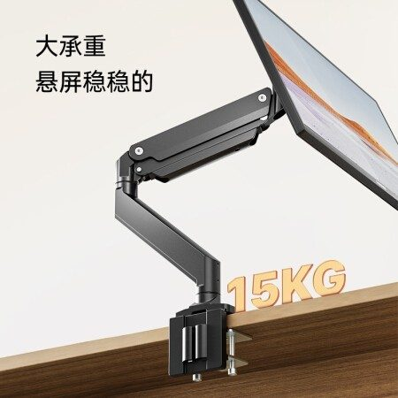
VESA MIS-D 75-100 接口与倾角摩擦关节
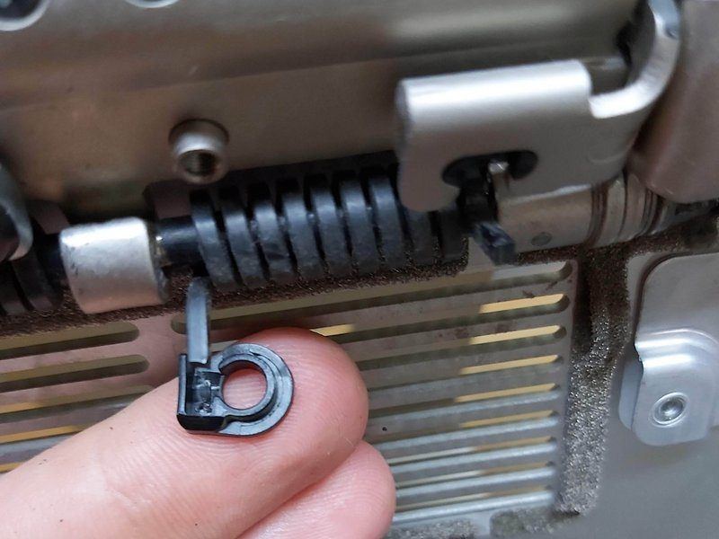
iMac 27 英寸铰链弹簧塑料帽失效（反面案例）

iPad Magic Keyboard 双铰链悬浮支架与配重
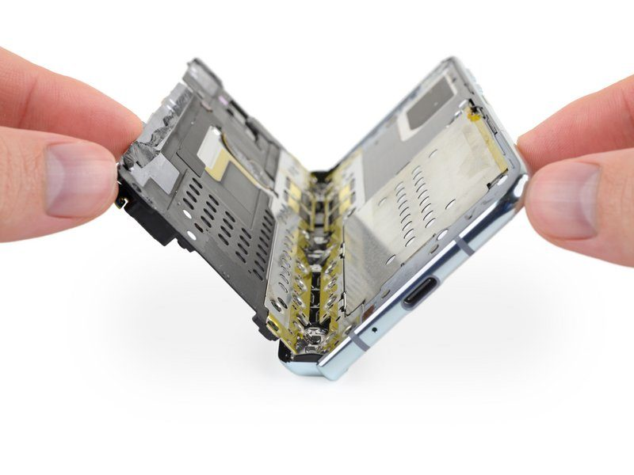
三星 Galaxy Fold 一代铰链与屏幕支撑结构

三星 Galaxy Z Flip 铰链与尼龙防尘刷

微软 Surface Book 动态支点铰链（分段铝铰链）
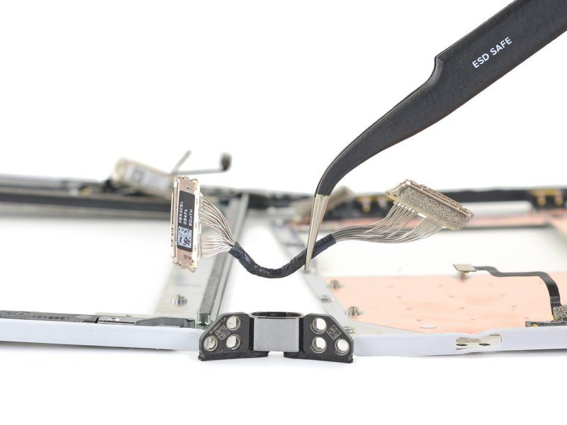
微软 Surface Duo 360° 双铰链
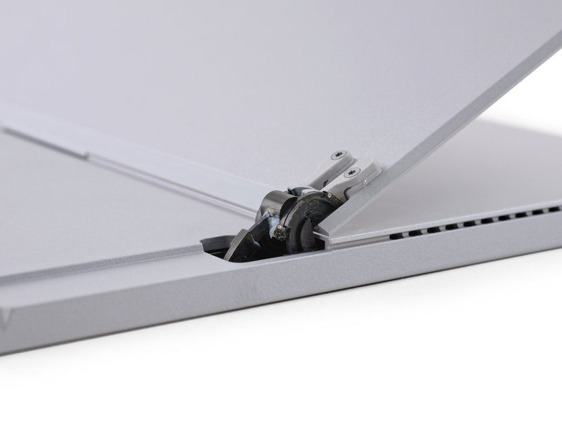
微软 Surface Pro Kickstand 宽角摩擦铰链
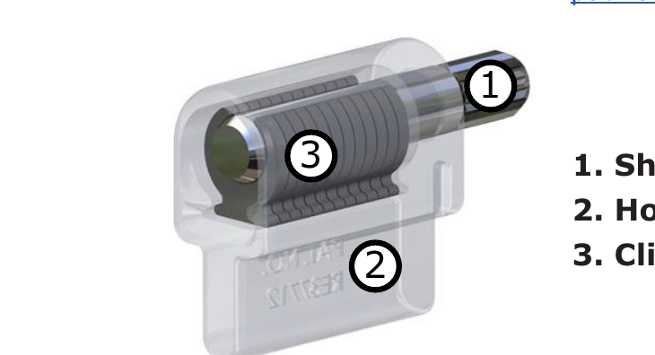
恒扭力摩擦铰链：卡簧过盈产生扭力与「最低扭力 > 盖板力矩」选型

活动铰链（Living Hinge）：一体成型的柔性铰链

苹果 MacBook Pro 2016 Flexgate（反面案例）：绕板的屏幕排线与 2018 年加长 2 mm
04-机构与运动
26 篇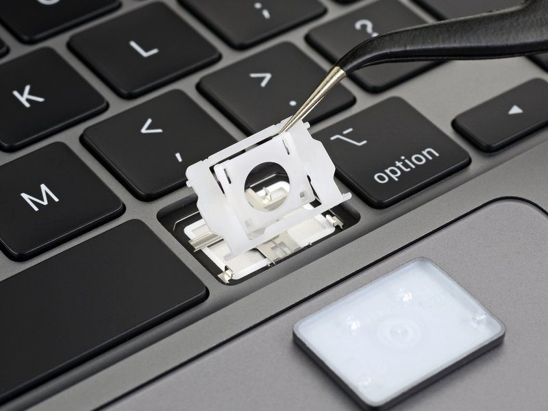
16 英寸 MacBook Pro 剪刀脚键盘：1 mm 键程与交叉支架（对照蝶式）

ALPS EC11 旋转编码器：11 mm 金属轴增量脉冲与可选按压开关

Blum TIP-ON 按压弹开抽屉：柜体轨弹簧单元与抽屉锁止模块

Cherry MX 机械键盘轴：轴心、螺旋弹簧与金交叉触点

DualSense 自适应扳机：电机+蜗杆的力反馈机构

Ergotron CF 恒力螺旋弹簧支架（对比气弹簧）

FIDLOCK V-BUCKLE：磁吸引导到位后再由机械扣锁死

GoPro 快拆卡扣与指旋螺母：两爪弹性卡入和螺钉夹紧是两套锁

Mac Pro 2019 旋转把手外壳锁与免工具模块锁
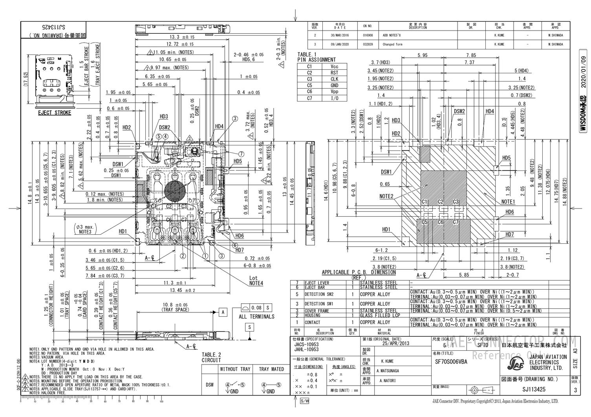
Nano-SIM 针顶出托盘（Pin-eject）：外部顶针把客户自制托盘顶出

Nifco 经典心形槽 Push-Push：U 形销与片簧（对照 ITW 防变形版）

SD 与 microSD 推推式卡座：心形槽滑块与卡片当撞销
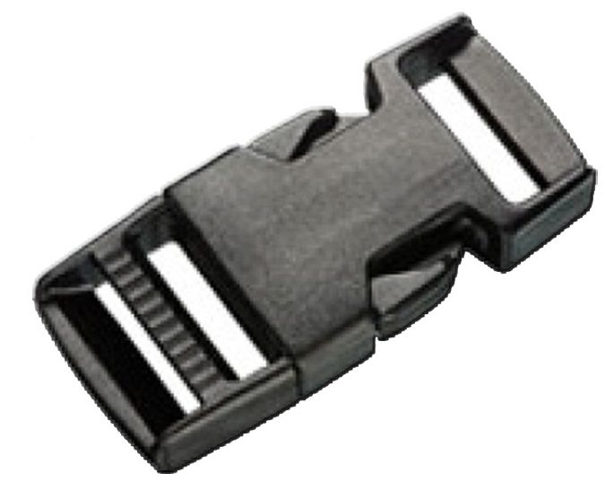
侧向释放插扣（ITW SR 1）：双弹性卡臂、母座侧窗与中间翼

微软 Surface Book 形状记忆合金（肌肉线）电控分离锁

手机侧键传力结构：键帽、软胶导电基与壳体间隙链
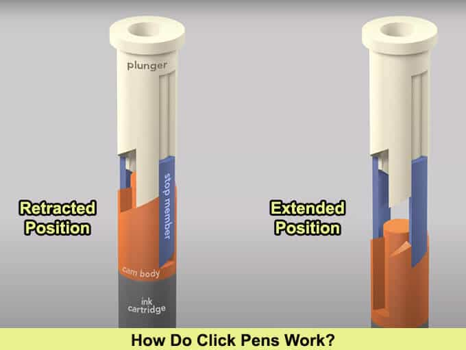
按动圆珠笔：旋转凸轮的按压伸缩机构
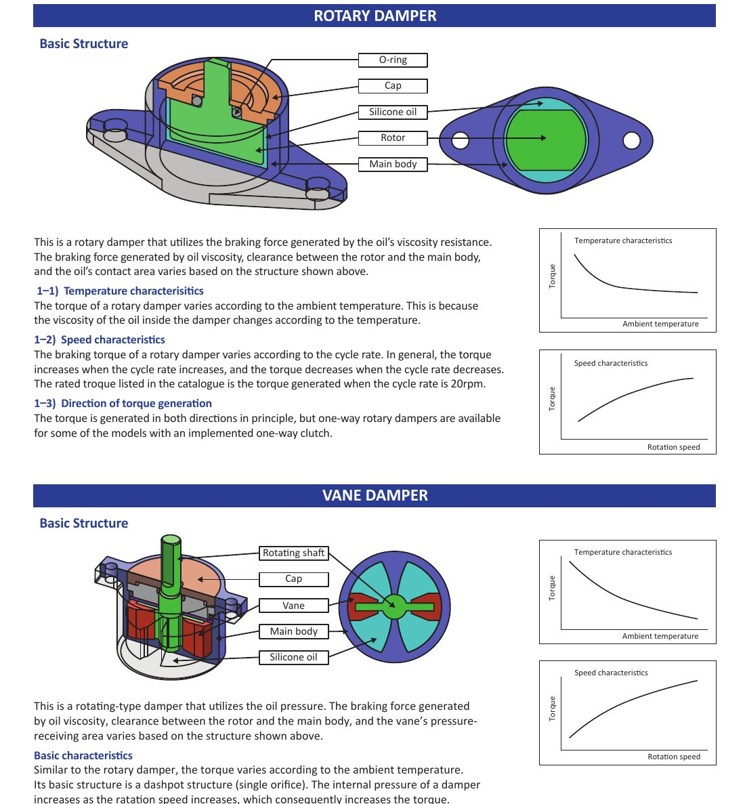
旋转阻尼器（缓降盖板）：硅油黏性、水平型与垂直型的扭矩曲线

显示器气弹簧支架：张力螺丝与悬停平衡

气弹簧内部结构：活塞阻尼孔与氮气预压

电动工具电池包：滑轨插入与按压锁舌（得伟拆解）

硅胶导电按键：斜壁荷重、碳粒与排气槽
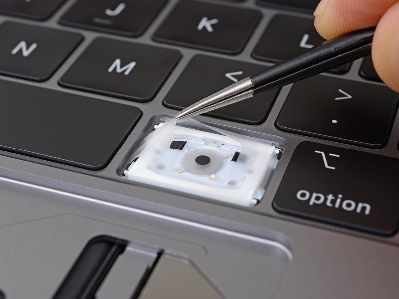
苹果蝶式键盘（反面案例）：变薄 40% 的代价与硅胶防尘膜补救

薄膜开关叠层：面板、间隔层、电路层与开窗排气

金属锅仔片阵列：直径、力值、行程与寿命互换

防变形静音 Push-Push 按压弹跳锁（ITW 专利 EP1596030）

鼠标微动开关（Omron D2FC）：杠杆、簧片翻转与触点
05-密封与防护
11 篇
GORE 防水透气膜：压力平衡与粘贴式透气阀的安装参数
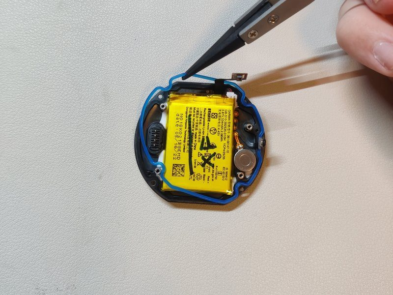
Garmin fēnix 7X 可复用橡胶密封圈

GoPro Hero4 Session 免外壳防水机身

O 形圈密封槽设计：填充率、压缩率与挤出间隙的五个数

TPU 包胶气囊角：拐角外凸空腔缓冲跌落冲击
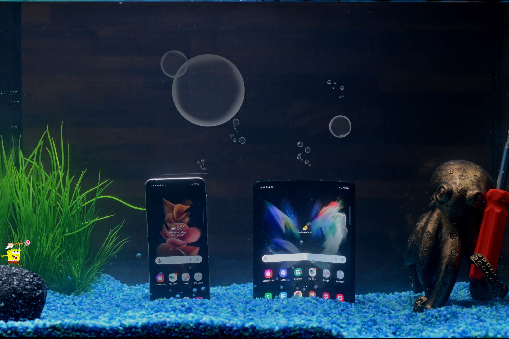
三星 Galaxy Z Fold3 折叠屏防水结构

三防手机整机防水结构：上下壳胶圈、电池盖、按键与开孔的参数清单

喇叭防尘网与防水透声膜叠层：声学孔与结构孔不要混用

安全帽 EPS 与 EPP 缓冲内衬：珠粒模压与硬壳堆叠

苹果 iPhone 7 首代 IP67：逐个开口封堵与气压平衡阀
跌落测试结构加固：六面四角、外圆角与局部 TPU 缓冲
06-拆解与可维修
9 篇
Fairphone 5 卡扣后盖与免胶可换电池

Fairphone 6 螺丝模块化（屏、电池、摄像头、USB-C）

Framework Desktop 免工具面板与标准件模块化
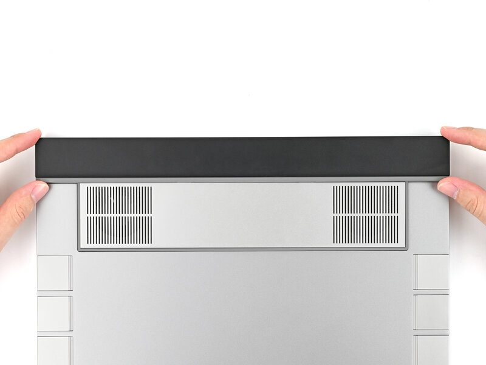
Framework Laptop 16 Expansion Bay 滑出式显卡模块

Framework 笔记本模块化扩展卡与磁吸边框

Valve Steam Deck OLED 可维修改版：金属螺纹柱、T6 Torx 与电池撬卡槽

苹果 AirPods Pro 全胶粘封装（反面案例）

苹果 iPhone 14 双面可开：中框承力与前后两道密封
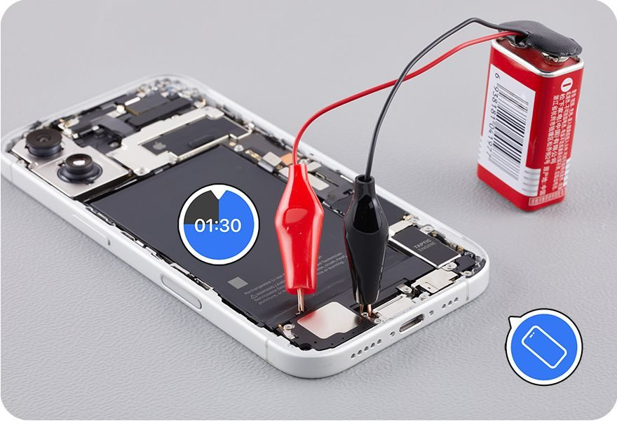
苹果 iPhone 16 电解脱粘电池胶
07-材料与工艺
12 篇
FDM 一体打印活动件（Print-in-Place）：XY 每边 0.3 mm、Z 两整层的间隙规则
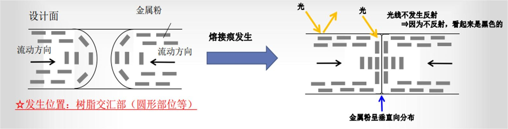
免喷涂材料 vs 喷涂：成本、良率与三条硬边界

双色注塑：硬胶先射、软胶后射的结构拆件规则

发泡件缩水：模温、排气与保压和实心件相反
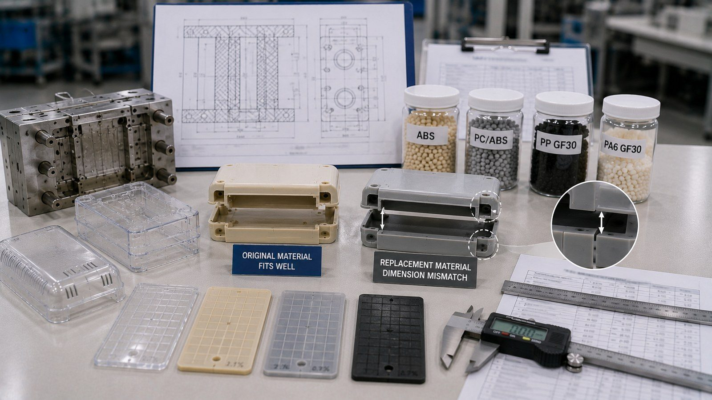
换料收缩率：同一张图换料就裂，图纸必须按新缩水放缩
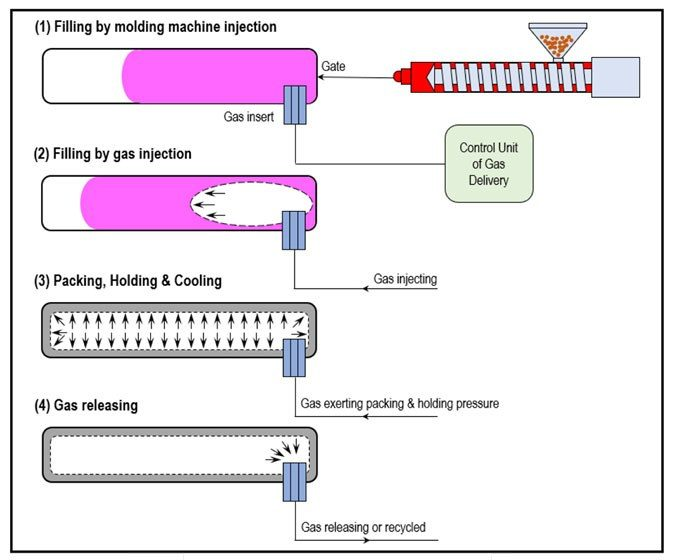
气体辅助注塑（GAIM）：用气道掏空厚筋消缩痕
注塑倒扣脱模：强脱、斜顶还是滑块

特斯拉 Giga Press 一体化压铸车身件

荣耀金属 3D 打印免组装转轴专利：连接余料与垂直打印方向的切割面
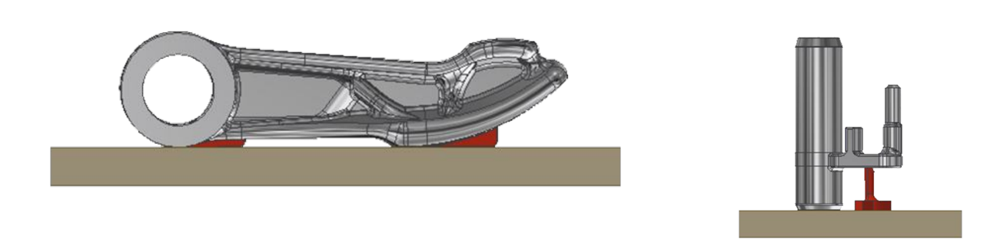
金属注射成型（MIM）：均匀壁厚、烧结支撑面与 5000 件成本拐点

钣金折弯件设计规则：最小弯曲半径与预留切口

铝件阳极氧化的尺寸链：膜厚一半向外、遮蔽螺纹与挂点